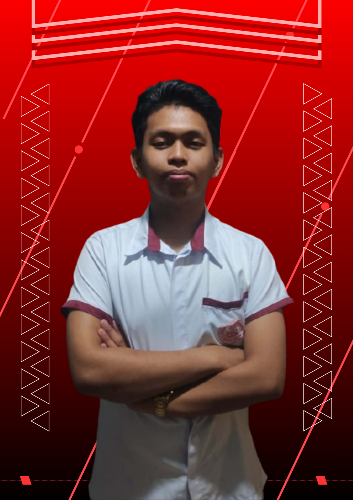

Club Frontliner
Being one of the frontliners of the club challenged me to step up and take responsibility. I learned how to communicate clearly, support my fellow members, and contribute actively to our activities.

Vice-President | iamtheCODE Club
TVL Student • Computer Systems Servicing • Code Enthusiast
I am Xyrus Khiel H. Gittap, a 17-year-old student currently enrolled in the Technical-Vocational-Livelihood (TVL) strand and Computer Systems Servicing at Culiat High School. I have a strong interest in technology and coding. I enjoy learning new things that help me develop my skills and prepare for my future career.

One of my major achievements was earning Rank 1 in completion performance among all learners over the past six months. Through consistent effort, discipline, and strong time management, I was able to complete all assigned tasks on time.

One of my notable achievements was becoming the first completer in our club. As one of the earliest to finish all required activities, I demonstrated initiative, responsibility, and commitment to my learning goals. This accomplishment motivated me to stay focused and organized, while also setting a positive example for my fellow club members to remain dedicated and consistent in completing their tasks.

My biggest achievement is being part of the club. Joining the club gave me the opportunity to grow both academically and personally by learning new skills, collaborating with others, and engaging in meaningful activities. Being part of this community helped me build confidence, develop discipline, and gain valuable experiences that continue to shape my interest in learning and self-improvement.

Being one of the frontliners of the club challenged me to step up and take responsibility. I learned how to communicate clearly, support my fellow members, and contribute actively to our activities.

Being part of the IamtheCode club has been an exciting adventure filled with learning, challenges, and growth. Every activity and project pushed me to explore new skills, solve problems creatively, and step out of my comfort zone. Working alongside fellow members made the journey enjoyable and inspiring, as we supported each other through challenges and celebrated our achievements together. Looking back, the experience was more than coding—it was a journey of discovery, teamwork, and personal development that I will always cherish.

Creating the website was a meaningful learning experience for me. At first, it was challenging to figure out how everything should work, but step by step, I learned through practice and mistakes. Designing the layout and fixing errors taught me to be patient and persistent. More than just coding, the experience gave me confidence and showed me that I can turn my ideas into something real and useful.
Hear what others have to say about my journey and contributions to the iamtheCODE club.
Reflections on Growth and Achievement